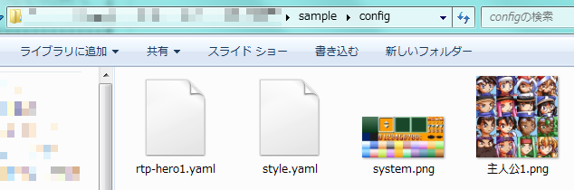

人間に読みやすいテキスト形式のシナリオファイルを元に、ツクール上でのサンプル表示と、TkoolBridge用のスクリプトの吐き出しを行います。
特徴として、Webページですがサーバサイドに情報を一切送りません。クライアントサイドでの処理で完結しています。
ライセンスに記載のあるとおり、作者は、ソフトウェアに関してなんら責任を負いません。
特に出所不明のシナリオファイルを読み込んだ場合、不正なスクリプトを実行される危険性があります。
信頼できるファイルのみ読み込むようにしてください。
上記ZIPを解凍する。
ツクール2000のRTPから、顔グラフィックの"主人公1.png"をconfigフォルダにコピー。
適当なシステムグラフィックを、configフォルダに"system.png"という名前でコピー。
configフォルダの中身が下記の画像のようになればOK。

※配布物の中にRTP画像を入れられないため、面倒な形式になってます。
当ツールの設定ファイル欄に、configフォルダの中身をドラッグ＆ドロップ。
シナリオファイル欄に"scenario.tksce"の中身をコピー＆ペースト。
すべてyaml形式です。
ベースの設定ファイルです。
style:
display:
name:
prefix: '【' # 接頭語
suffix: '】' # 接尾語
colorScope: 'outer' # outer: 名前の色付けに接頭語・接尾語を含む。 inner: 含まない
lineLimit: 4 # メッセージウィンドウの表示最大行数
color: # 以下、色設定
default: 0 # ここのキーがタグ名になります。タグ名はアルファベット小文字のみ受付。
blue: 1
yellow: 2
上記の例だと、【キャラ名】というような表示になります。
顔グラフィックの設定ファイルです。
1つのファイルに全て書く事も、複数のファイルに分割する事も出来ます。
※顔グラフィック毎・キャラクター毎に分割して管理することを想定しています。
person:
テスト: # 人物名
color: yellow # キャラ名の表示色
name: テストキャラ # メッセージウィンドウに表示されるキャラ名
faces:
通常: # 表情名
filename: test1 # 顔グラフィックのファイル名。
number: 0 # 顔グラフィックの番号
笑顔:
filename: test1.png
number: 1
RTP: # RTPの顔グラのように、1枚の画像に複数キャラがある場合
color: skyblue
faces:
アレックス:
name: アレックス # メッセージ表示時のキャラ名。facesにあるほうが優先されます。
filename: 主人公1
number: 0
ブライアン:
name: ブライアン
color: red # 色指定。facesにあるほうが優先されます。
filename: 主人公1
number: 2
RPGツクール2000の各種画像のフォーマットに沿います。ただし、BMPは読み込めません。
必須です。
ファイル名は「system.png」としてください。
顔グラフィック表示を使う場合のみ必要です。
ファイル名は設定ファイル上の記述に合わせてください。
下記に記載の無いタグは未実装です。必要になったら対応します。
特に変数周り、不便とは思いますが適当な文字列で書いておいて後で置換するとかしてください。
外字も対応してません。
色タグの名称やシスグラとの対応は、設定ファイルの内容に依存します。詳細は設定ファイルを参照してください。
<pb>を書くことで、行を使い切っていない場合でも、メッセージウィンドウを切り替えることが出来ます。
[]の中はツクール2000での制御文字をあらわしています。
送ってないです。JavaScriptでファイルの内容を読み込んでいるだけです。
心配だったらNetworkタブ見るとかLANケーブル抜いて動かすとかしてください。
要望はGitHubのissueやblogのコメント等でlpreまでお伝えください。